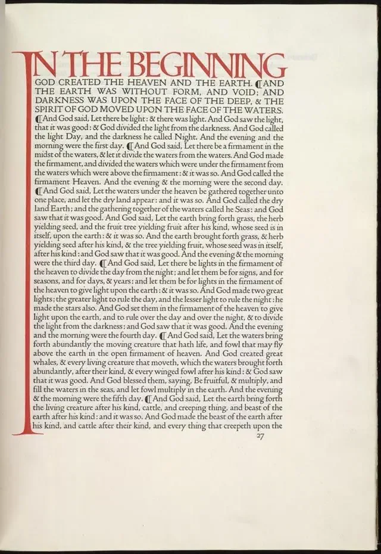
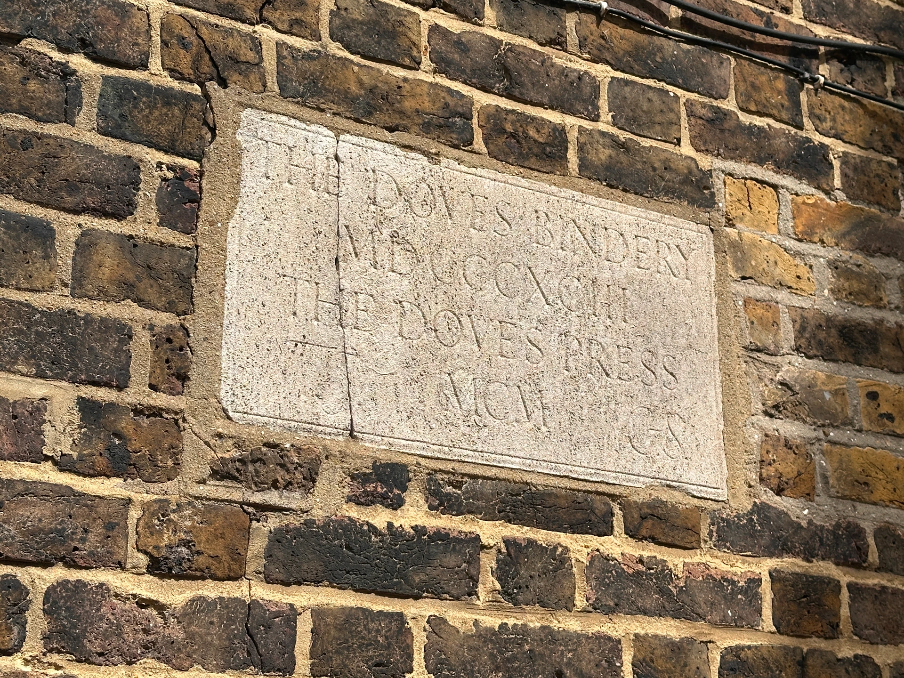
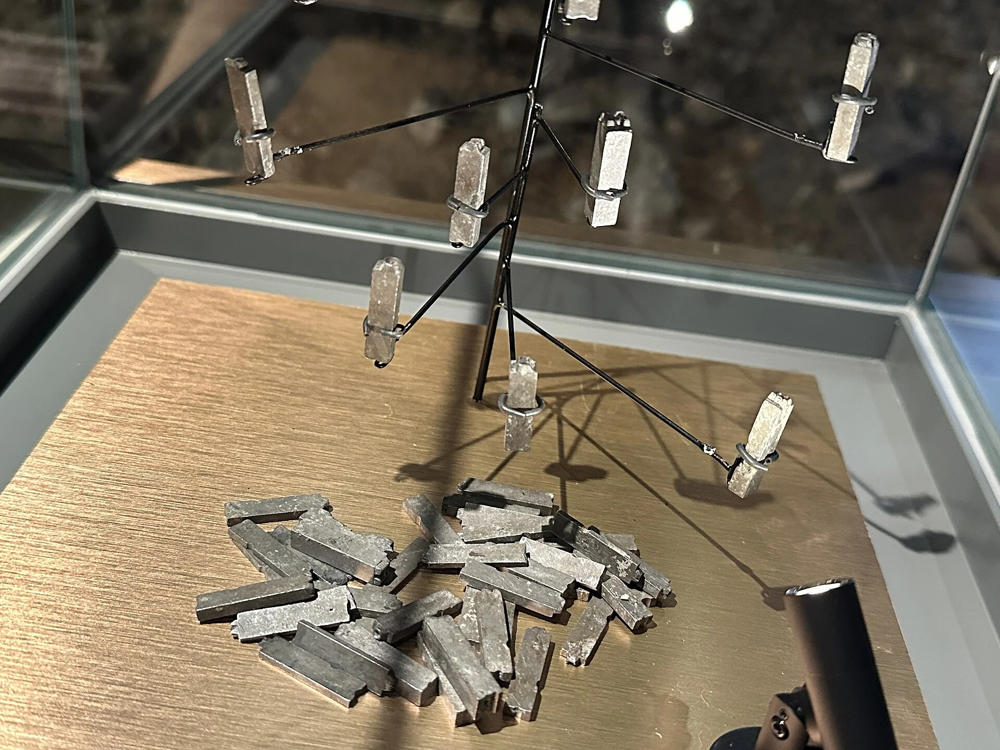

아직 펼치지 않은 카드흩어지고 사라질 뻔한 책 · 5도브스 활자한밤중 다리 위에서 한 노인이 무거운 상자를 강물에 쏟았어요. 그 안에는 무엇이 들어 있었을까요?할아버지가 밤마다 강물에 무언가를 던졌대. 뭐였을까?
1900~1917년 · 2014년영국 런던 해머스미스 · 템스강
도브스 활자
1916년 8월 31일 저녁, 일흔을 넘긴 인쇄인 코브든-샌더슨이 런던 해머스미스 다리에서 자기 출판사의 활자를 템스강에 던지기 시작했어요. 그 활자로 찍은 성경 첫 쪽의 붉은 ‘IN’을 먼저 손으로 따라 써 보세요.
옛날 런던에 아주 아름다운 글자 조각들이 있었어. 할아버지는 그 조각들을 밤마다 강에 던졌대. 먼저 그 책의 빨간 첫 글자를 따라 써 볼까?
검수 전 시안이에요(기준서 1판). 따라 쓰는 ‘IN’은 이 안내서가 『도브스 성경』 첫 쪽의 붉은 글자를 바탕으로 단순하게 그린 판이에요. 일기와 책의 말은 영어 원문을 이 안내서가 우리말로 옮겼어요. 장면에는 기록에 있는 것만 옮겼고, 상상은 ‘눈 감고 상상해 보기’에만 썼어요.
시안 확인용카드 단계 미리 보기
1
붉은 IN을 따라 쓰기
앞면의 창세기 첫 쪽을 다시 봐요. 이 쪽의 붉은 글자는 쪽 맨 아래까지 내려오는 I와, 맨 윗줄의 ‘N THE BEGINNING’뿐이에요(모건 도서관). 큰 제목과 첫 글자는 손글씨 장인 에드워드 존스턴(Edward Johnston)이 맡았어요(브리드웰 도서관).
나머지 검은 글자는 모두 도브스 활자예요. 15세기 베네치아의 인쇄업자 니콜라 장송(Nicolas Jenson)과 야코부스 루베우스의 활자를 본떴어요(브리드웰 도서관). 이름난 펀치 장인 에드워드 프린스가 글자를 쇠 도장(펀치)에 새겼고, 크기는 16포인트 한 가지뿐이었어요(오리건 대학교 도서관).
아래 판은 이 안내서가 그 붉은 ‘IN’을 바탕으로 단순하게 그린 따라 쓰기 판이에요. 빨간 점에서 시작해 네 획을 그어 보세요.
빨간 점에서 시작해, 흐린 선을 위에서 아래로 따라 그어 보세요.
빨간 점에서 시작해 흐린 선을 따라 그어 보세요. 다 그으면 붉은빛으로 바뀌어요.
붉은 IN을 다 썼어요. 그 아래 검은 글자를 찍은 활자는 1916년부터 템스강 바닥으로 갔어요.
“이제 우리 책이 모두 흡족하다. 책들은 그 아름다운 단순함 속에서 아름답다.”
코브든-샌더슨의 일기 — 존스턴이 쓴 창세기 첫 쪽을 받고 · 브리드웰 도서관 전시에 실린 영어 원문을 이 안내서가 옮김
빨간 점에서 시작해서 위에서 아래로 쭉! 네 번 그으면 IN이 돼.
물어보기I는 왜 이렇게 길게 내려올까?
2
돌에 새긴 1893과 1900
돌 명판의 로마 숫자 MDCCCXCIII은 1893, MCM은 1900이에요. 사진은 2026년 해머스미스의 템스강 가에서 찍었어요(위키미디어 공용 사진 정보).
코브든-샌더슨은 1893년 템스강 가의 자기 집에 제본소를 열고, 집 옆 술집 ‘더 도브(The Dove, 비둘기)’의 이름을 따서 ‘도브스 제본소’라고 불렀어요(런던 박물관). 1900년에는 인쇄업자 에머리 워커(Emery Walker)와 함께 그 이름으로 출판사를 세웠어요.
『도브스 성경』 끝의 간기(책을 찍은 곳과 사람을 적은 글)에는 두 동업자의 이름이 나란히 있어요.

“해머스미스 더 테라스 1번지 도브스 출판사에서, T. J. 코브든-샌더슨과 에머리 워커가 찍었다.”
『도브스 성경』의 간기 · 모건 도서관 목록에 실린 영어 원문을 이 안내서가 옮김
간기에는 활자를 한 자씩 골라 쪽을 짠 식자공 세 사람(J. H. 메이슨, J. 거트리지, C. T. 그린그래스)과 인쇄기를 돌린 인쇄공 네 사람(H. 게이지콜, J. 라이언, T. 월러, A. 보몬트)의 이름도 있어요(모건 도서관). 종이에 500부를 찍었고, 양피지에는 두 동업자를 위해 두 부만 찍었어요(모건 도서관 · 브리드웰 도서관).
그러나 두 사람은 크게 다퉜고, 앞면에 적은 대로 활자는 코브든-샌더슨이 죽으면 워커에게 넘어가기로 했어요. 그는 1922년, 제본소를 열었던 그 강가 집에서 세상을 떠났어요. 집 벽에는 1974년 런던시의회가 붙인 파란 명판이 있어요(위키미디어 공용 사진 정보).
할아버지는 강가 집에 책 만드는 곳을 차렸어. 옆집 가게 이름을 따서 ‘비둘기’라고 불렀대.
물어보기책 한 권을 만드는 데 몇 사람이 필요할까?
3
1916년 8월 31일 밤
1916년, 도브스 출판사는 마지막 책을 냈어요(프리 레인지 히스토리). 그해 8월 31일 저녁, 일흔을 훌쩍 넘긴 코브든-샌더슨은 해머스미스 다리로 갔어요. 그리고 다리 위에서 활자를 템스강에 던지기 시작했어요(알렉산더 S. 로슨 아카이브).
그날 한밤중, 그는 일기에 이렇게 적었어요.

“도브스 출판사의 활자는 장송의 활자를 본떠 만들었다. 오늘 저녁 나는 그것을 없애기 시작했다. 해머스미스 다리에서 세 쪽을 템스강에 던졌다.”
코브든-샌더슨의 일기, 1916년 8월 31일 한밤중 · 알렉산더 S. 로슨 아카이브에 실린 영어 원문을 이 안내서가 옮김
‘세 쪽’은 책 세 쪽 분량으로 짜 맞춘 활자 덩어리예요. 그는 “전부 없앨 때까지 계속하겠다”고도 적었어요(알렉산더 S. 로슨 아카이브 · 이 안내서가 옮김). 그 뒤 이듬해 1월까지 거의 밤마다 다리로 가서, 100개가 넘는 꾸러미로 1톤이 넘는 금속을 던졌어요(프리 레인지 히스토리).
한번은 겨냥이 빗나가 활자가 다리의 튀어나온 턱에 떨어졌어요. 그날 밤 그는 이렇게 적었어요. “물이 빠지고 있다. 밤새 저기 그대로 있겠지. … 겨냥했는데 강바닥을 놓쳤다. 생각은 장대했으나, 한 짓은 우스웠다.”(알렉산더 S. 로슨 아카이브 · 이 안내서가 옮김)
사진은 2008년 낮에 찍은 해머스미스 다리예요. 지금 다리는 1887년, 옛 다리의 받침 위에 새로 놓은 것이에요(런던 박물관). 그가 섰던 바로 그 다리예요.
깜깜한 밤, 할아버지는 큰 다리 위에서 글자 조각들을 강물에 던졌어.
물어보기강물 속으로 들어간 글자들은 어떻게 됐을까?
4
강이 돌려준 글자
거의 100년 뒤인 2014년 10월, 디자이너 로버트 그린(Robert Green)이 썰물 때 강가를 뒤졌어요. 던진 자리에서 15야드(약 14미터)쯤 떨어진 곳에서, 20분쯤 만에 활자 세 개가 나왔어요. 그는 v, e, i 세 글자의 사진에 “내가 뭘 찾았는지 봐”라는 말을 붙여 보냈어요(프리 레인지 히스토리 · 이 안내서가 옮김).
런던항만청 잠수부들이 147개를 더 건져 올렸고, 강가에서 물건을 줍는 머드라커(mudlark) 루카스 오를린스키는 500개 넘게 찾아냈어요(런던 박물관). 사진은 2025년 런던 박물관 도클랜즈의 진열장에 놓인 활자예요(위키미디어 공용 사진 정보). 막대 하나가 글자 하나예요.
그 100년 동안 템스강은 밀물과 썰물로 활자 위를 오갔어요. 그가 1911년 일기에 적어 둔 그대로였어요.

“내 모든 책을 찍은 강가, 그 템스강의 바닥에 도브스 출판사의 활자를 물려준다. 펀치와 모형, 그리고 내가 죽을 때 쓰고 있는 활자를. 강물이 밀물과 썰물로 그 위를 지나가기를.”
코브든-샌더슨의 일기, 1911년 · 알렉산더 S. 로슨 아카이브에 실린 영어 원문을 이 안내서가 옮김
100년 뒤에 아저씨가 강가에서 글자 조각을 찾았어! 그동안 강물이 글자 위로 흘렀대.
물어보기강물 속에서 100년을 지낸 글자는 어떤 모습일까?
눈 감고 상상해 보기
1916년 8월 31일 한밤, 해머스미스 다리 위. 발아래로 검은 강물이 흘러요. 묵직한 꾸러미를 난간 너머로 내밀자, 짧게 철썩. 납으로 된 글자들이 물속으로 가라앉고, 강물은 다시 조용히 흘러가요.
눈을 감아 봐. 깜깜한 밤, 큰 다리 위야. 무거운 꾸러미를 쏙 내밀면… 퐁당! 글자 조각들이 강물 속으로 가라앉아.
나의 자리
그는 활자를 ‘없앤다’고도, 강에 ‘물려준다’고도 적었어요. 다리 위의 그 밤, 그 일은 그에게 어느 쪽이었을까요?
할아버지는 글자들을 버린 걸까, 강물에 맡긴 걸까?
마음에 닿는 한 줄을 고르거나 직접 써 보세요. 한 줄을 남기면 이 자리의 도장이 찍혀요. 이 기기에만 저장돼요.
더 깊이
궁금한 칸만 펼쳐 읽어도 괜찮아요.
알고 보면
먼저 간 것 활자보다 먼저, 1913년 성금요일 앞 주간에 펀치와 모형이 강으로 갔어요(프리 레인지 히스토리). 펀치는 글자를 새긴 쇠 도장, 모형은 그 도장으로 찍어 만든, 활자를 떠내는 틀이에요.
도서 목록 맨 뒤의 글 그는 1916년에 낸 도브스 출판사 도서 목록 맨 뒤에 ‘봉헌’이라는 글로 1911년의 그 말을 실었어요(프리 레인지 히스토리). 1917년 3월에는 출판사 문을 닫으며 활자를 템스강에 ‘물려주었다’고 밝혔어요(런던 박물관).
붉은색을 아껴 쓴 책 1917년 영국 『타임스 문예 부록』은 이 성경을 두고 쪽의 비율과 ‘붉은색을 아끼고 알맞게 쓴 것’을 칭찬했어요(오리건 대학교 도서관 · 이 안내서가 옮김).
다시 쓰는 글자 그린은 2013년에 첫 디지털 도브스 활자를 내놓았고, 건져 올린 활자를 보며 다듬은 판을 2015년에 냈어요(프리 레인지 히스토리). 건져 올린 활자는 에머리 워커 트러스트가 맡아 지켜요(런던 박물관).
기록마다 다른 점
몇 번 갔을까 런던 박물관은 1916~1917년에 다리를 170번쯤 오갔다고 적어요. 프리 레인지 히스토리는 1916년 8월부터 1917년 1월까지 100개가 넘는 꾸러미를 던졌다고 적어요. 영어 위키백과는 그의 일기에 끝낸 날이 나오지 않는다고 적어요.
틀을 던진 날 펀치와 모형을 던진 때를 프리 레인지 히스토리는 ‘1913년 성금요일 앞 주간’으로, 영어 위키백과는 ‘1913년 3월 21일 성금요일’로 적어요.
몇 개를 건졌을까 런던 박물관은 항만청 잠수부들이 147개를 건졌다고 적고, 프리 레인지 히스토리는 그린이 항만청의 도움으로 모두 150개 넘게 건졌다고 적어요. 앞면은 디지털 글꼴이 나온 해를 2015년으로 적었는데, 첫판은 2013년에 나왔어요.
IN 네 획 금박
붉은 IN의 네 획을 끝까지 따라 쓰면 카드에 금박이 입혀져요.
붉은 IN의 네 획을 따라 쓰기
아이와 함께 채색
아이와 함께 ‘영화처럼 보기’를 끝까지 보면 카드가 채색돼요.
아이와 함께 ‘영화처럼 보기’를 끝까지 보기
근거 보기 (12)
- 알렉산더 S. 로슨 아카이브: 코브든-샌더슨의 일기 — 1911년의 유언 같은 글(템스강 바닥에 활자·펀치·모형을 물려준다, 강물이 그 위를 지나가기를), 1916년 8월 31일 한밤중(장송을 본뜬 활자, 오늘 저녁 없애기 시작, 해머스미스 다리에서 세 쪽, 전부 없앨 때까지), 겨냥이 빗나가 다리의 턱에 떨어진 밤의 일기
- 브리드웰 도서관 전시: The Doves Press Bible — 존스턴이 큰 제목과 첫 글자를 맡음, 창세기 첫 쪽을 받고 쓴 일기(아름다운 단순함), 장송과 루베우스의 활자를 본뜸, 두 동업자를 위해 양피지에 두 부, 워커의 장서표
- 모건 도서관 목록: The English Bible(도브스 출판사) — 쪽 아래까지 내려오는 붉은 첫 글자와 붉은 세 낱말, 간기(해머스미스 더 테라스 1번지, 코브든-샌더슨과 워커), 식자공 세 사람과 인쇄공 네 사람, 500부, 다섯 권
- 매그스(고서점): 도브스 성경 — 붉은 첫 글자들과 창세기 첫 쪽의 쪽 높이 첫 글자를 존스턴이 그리고 씀, 500부
- 오리건 대학교 도서관 특별 소장품 블로그: 도브스 성경 양피지 낱장 — 펀치 장인 에드워드 프린스, 16포인트 한 크기, 장송을 본뜸, 1917년 『타임스 문예 부록』 평(붉은색을 아끼고 알맞게 씀)
- 프리 레인지 히스토리: From the archives — 1916년 마지막 책, 1913년 성금요일 앞 주간의 펀치와 모형, 1916년 8월~1917년 1월 100개 넘는 꾸러미·1톤 넘는 금속, 1916년 도서 목록 맨 뒤의 ‘봉헌’, 2014년 10월 그린(15야드·20분·v e i·‘내가 뭘 찾았는지 봐’), 모두 150개 넘게, 디지털 글꼴 2013년·2015년
- 런던 박물관 블로그: Doves Type — 1916년 8월 한밤, 170번쯤, 1917년 3월 ‘물려주었다’, 2014년 10월 그린의 세 개, 항만청 잠수부 147개, 머드라커 루카스 오를린스키 500개 넘게, 에머리 워커 트러스트, 1893년 제본소와 술집 더 도브
- 런던 박물관: Hammersmith Bridge — 지금 다리는 1887년 개통, 조지프 바잘게트 설계, 옛 다리의 받침 위에
- 스크리블러스(서예 용품점의 글씨 교실): Roman Capitals – Order and Directions — H와 N은 세로 획 둘(글자 높이의 4분의 3 간격) 다음에 셋째 획, 펜은 위에서 아래·왼쪽에서 오른쪽으로만
- 영어 위키백과: Doves Press — 길잡이로만(1913년 3월 21일 성금요일, 1917년 1월 170번, 일기에 끝낸 날 없음)
- 이 안내서가 그린 ‘IN’ 따라 쓰기 판 · 『도브스 성경』 창세기 첫 쪽의 붉은 글자를 바탕으로(위키미디어 공용, 퍼블릭 도메인)
- 위키미디어 공용 사진 정보: 도브스 제본소·출판사 돌 명판(Matt Brown, 2026년 5월 6일, 해머스미스) · 파란 명판(1974년 런던시의회, 어퍼 몰 15번지) · 해머스미스 다리(2008년) · 런던 박물관 도클랜즈의 도브스 활자(2025년 8월 13일)
그림·사진·소리 출처
‘처음 만나는 기독교 문화’의 깊은 카드예요. 카드 단계와 남긴 글은 이 기기에만 저장돼요.